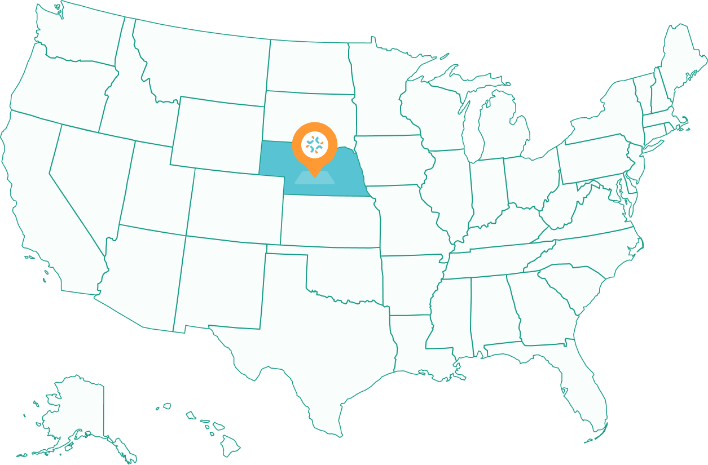
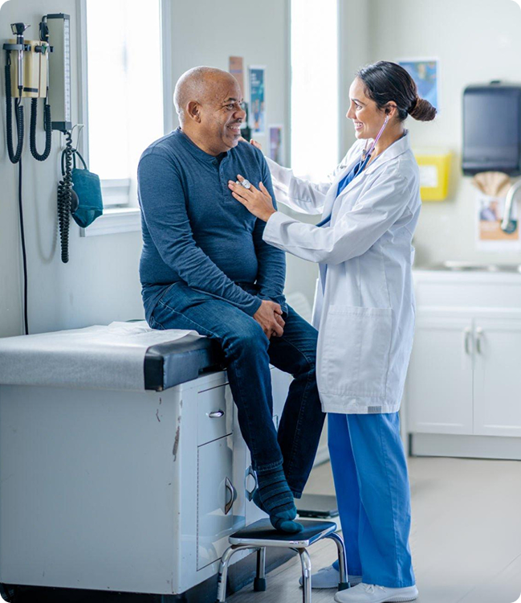

Nationwide Teleradiology Services: 50-State Coverage & Compliance
Scaling your diagnostic capabilities from coast to coast. TopRad provides seamless, board-certified interpretations with a network of radiologists licensed in all 50 states.
Scaling your diagnostic capabilities from coast to coast. TopRad provides seamless, board-certified interpretations with a network of radiologists licensed in all 50 states.
Our infrastructure is built to support healthcare systems regardless of geography. Use the interactive map below to explore our state-specific capabilities, licensing status, and localized workflow integrations.

One of the greatest hurdles in advanced teleradiology services is ensuring that every radiologist is fully compliant with state medical board requirements. TopRad manages the "heavy lifting" of credentialing and licensing so your facility doesn't have to.
We exclusively utilize U.S.-based, ABR-certified radiologists.
Our clinical leadership ensures that every report meets the specific diagnostic and regulatory standards of the state where the imaging facility is located.
Our onboarding team has existing relationships with medical staff offices (MSOs) nationwide, allowing us to expedite the privileging process and go live in new territories in as little as 10 business days.

For organizations with diagnostic centers in multiple regions, TopRad provides a single, unified radiology workflow software solution.
Is TopRad licensed to provide teleradiology services in my state?
Yes. We maintain a robust network of board certified teleradiology professionals with active licenses in all 50 states and the District of Columbia.
How do you handle credentialing for out-of-state radiologists? Do you support Lung-RADS for screening programs?
Yes, we fully support Lung-RADS formatting and classifications for lung screening programs.
Can you support multi-site imaging groups with centers in different time zones?
Our standard turnaround time for routine CT studies is within 2-4 hours.
Discover how our nationwide teleradiology services can support your facility's growth and patient care goals.